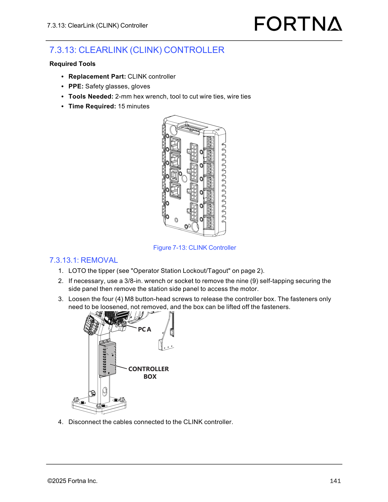

| Procedure ID | proc_remove_and_unplug_limit_home_sensor_a_axis_or_z_axis_v1 |
|---|---|
| Title | Remove and unplug Limit/Home sensor (A-axis or Z-axis) |
| Procedure Type | recovery |
| Primary Role | operator |
| Support Safe | Yes |
| Capability Tags | tipper_station_fault |
| Access Surface | physical_floor |
| Audience Roles | operator |
| Failure Pattern Tags | None |
| Validation Status | needs_sme_review |
| Merge Status | source_finalized |
LOTO the tipper, unplug and remove a defective Limit/Home proximity sensor (A-axis or Z-axis), and route the sensor cable through the wire routing hole for replacement.
Use when a Limit/Home proximity sensor is defective and must be removed (A-axis sensor or Z-axis sensor) so it can be replaced, including preparing the cable routing for the new sensor.



Responsible role: operator
Instruction:
Use the sensor location guidance to determine whether the defective Limit/Home sensor is an A-axis sensor or a Z-axis sensor.
Expected result:
You can classify the sensor as either A-axis or Z-axis based on its location/connection point.
Stop or Escalate If:
Responsible role: operator
Instruction:
LOTO the tipper using the manual’s Operator Station Lockout/Tagout procedure.
Expected result:
The tipper is locked out/tagged out prior to unplugging the sensor.
Responsible role: operator
Instruction:
Unplug the sensor from its connection point.
Expected result:
The sensor is unplugged from its connection point (PCA near A-axis motor for A-axis; CLINK controller inside control box for Z-axis).
Stop or Escalate If:
Responsible role: operator
Instruction:
Remove the M3 button-head screw holding the sensor in place, then feed the sensor through the hole where the wire is routed.
Expected result:
The M3 button-head screw is removed and the sensor is fed through the wire routing hole.
Responsible role: operator
Instruction:
If removing an A-axis sensor, pull the sensor away from the column area; if removing a Z-axis sensor, pull the sensor from the column. If the A-axis sensor is defective, cut the wire tie if needed.
Expected result:
The defective sensor is removed from its mounting location: A-axis sensor pulled away from the column area; Z-axis sensor pulled from the column.
Stop or Escalate If:
Responsible role: operator
Instruction:
If beneficial, connect the new sensor to the one being replaced to pull through the cable routing so it is routed properly and easier.
Expected result:
Cable routing is prepared so the replacement sensor can be routed properly through the wire routing path.